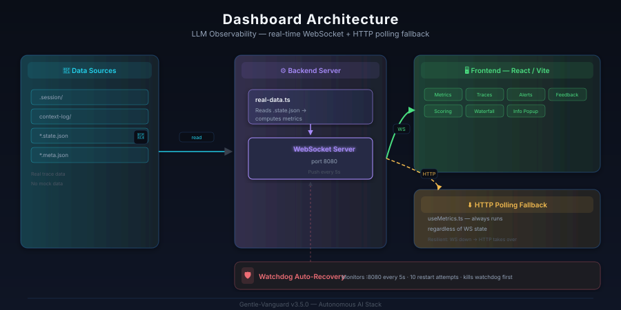
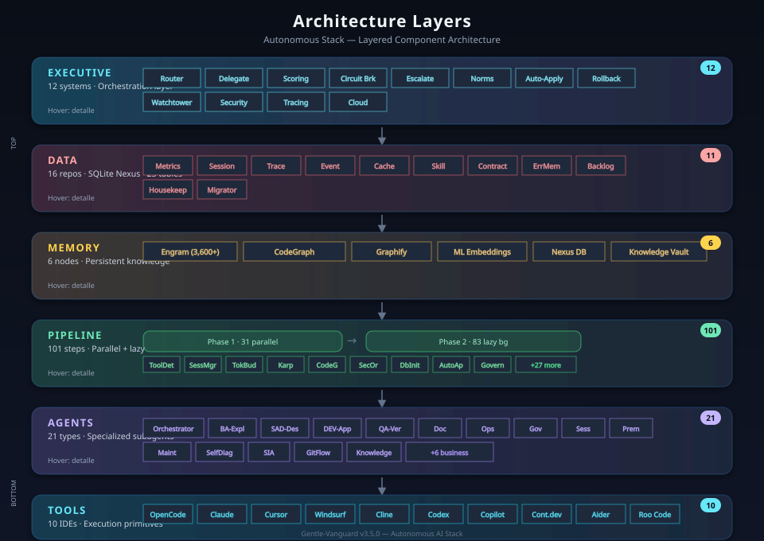

Monitoreo continuo, 113 health checks, 109 Tests automatizados, y trazabilidad total del stack Gentle-Vanguard
Estado actual del stack en tiempo real
21 componentes monitoreados en cada ciclo de health check
| Component | Checks | Status | Description |
|---|---|---|---|
| dashboard-ws | 6 | PASS | Dashboard WS server, API 200, watchdog PIDi |
| codegraph | 5 | PASS | Index exists, 677 files, 10,663 nodes, 21,746 edges, 28MBi |
| timeout-daemon | 4 | PASS | Timeout daemon, watchdog PIDs, restart loop protectioni |
| ml-embeddings | 4 | PASS | ML index, embedding files, skill embeddingsi |
| engram | 4 | PASS | DB integrity, reindex log, RAG pipeline, 2078 obsi |
| mcp | 5 | PASS | Config files, bridge health, MCP statusi |
| session | 5 | PASS | Session dir, manifest, pipeline configi |
| hooks | 4 | PASS | Git hooks: pre-commit, post-commit, post-mergei |
| configs | 6 | PASS | JSON schemas, 5 configs, JSON validatori |
| tool-configs | 4 | PASS | Clinerules, cursorrules, continue configi |
| security | 5 | PASS | Opencode structure, auth config, security orchestratori |
| cloud-connectors | 4 | PASS | Hybrid executor, AWS/Azure delegatorsi |
| tracing | 4 | PASS | Tracing spans, OTLP export, span filesi |
| state-persistence | 4 | PASS | Checkpoint dir, snapshots, rollback readinessi |
| gentle-vanguard-db | 5 | PASS | Nexus DB file, WAL, integrity check, 7 migrations, 21 tablesi |
| model-provider | 4 | PASS | Model router, profiles, fallback configurationi |
| audit-pipeline | 4 | PASS | Audit logs, pipeline, archivei |
| governance | 4 | PASS | Policy files, rules directory, 60 Normativesi |
SQLite WAL mode, 7 migrations, 21 tables, monitoreado por watchtower
001→007 aplicadas
Core + stack + scoring + backlog
4 open, 4 resolved
| Command | Description |
|---|---|
npm run db:init |
Init DB + run all migrationsi |
npm run db:health |
Health check: integrity, WAL, tables, rowsi |
npm run db:backup |
Safe online backup to .runtime/backups/i |
npm run db:optimize |
WAL checkpoint + REINDEX + VACUUMi |
npm run db:prune |
Prune old data from stack tablesi |
npm run backlog:stats |
Show backlog statistics by status/severity/typei |
npm run backlog:list |
List backlog items with filtersi |
npm run backlog:report -- --format markdown |
Generate markdown reporti |
Sistema completo de trazabilidad en Nexus DB
| Field | Description |
|---|---|
assignee_role |
dev, po, qa, ux, ops, sec, anyi |
severity |
critical, high, medium, lowi |
priority |
1-5 numerici |
estimated_hours |
Estimated resolution timei |
impact |
blocking, major, minor, cosmetici |
target_release |
Target version/releasei |
environment |
dev, staging, prod, alli |
status |
open, in_progress, resolved, wont_fix, backlog, duplicatei |
| Feature | Description |
|---|---|
| Commentsi | Discussion thread per itemi |
| Status Historyi | Full audit trail of status changesi |
| Related Itemsi | duplicates, blocked_by, supersedes, child_ofi |
| Tagsi | Multi-label categorizationi |
| Session Linki | Traceability to session where found/fixedi |
| Searchi | Find similar items to prevent duplicatesi |
| Auto-prunei | Remove old resolved items (configurable TTL)i |
Múltiples capas de verificación antes de cada cambio
npm run typecheck — Zero TypeScript errors enforced by
tsc --noEmit
npm run lint — ESLint with --max-warnings 0. Zero
tolerance for warnings.
npm test — 109 Test files, all must passnpm run watchtower:health — 113 Checks across 22 components, 100% PASS
required
Métricas de rendimiento del stack
All scripts must complete in <2s for interactive use
Pipeline must initialize within 30 seconds
Watchtower expects 113/113 PASS every cycle
Arquitectura y observabilidad del stack en un vistazo

Observabilidad en tiempo real: WS + HTTP, 7 secciones, i18n, alertas.

6 capas: Tools → Agents → Pipeline → Memory → Data → Executive.